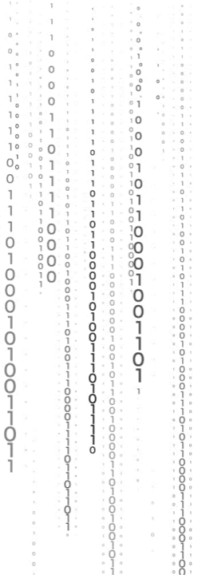
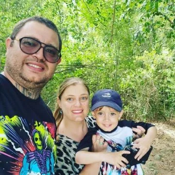
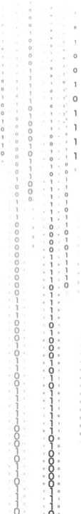
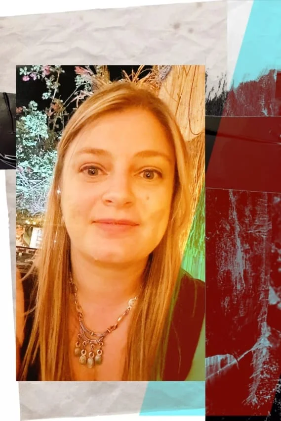

IT'S TIME
TO START
coding
Sobre mí
Me defino como una curiosa incansable, y es por eso que después de
incursionar en otras áreas terminé interesandome por el desarrollo web.
Me gusta este trabajo ya que permite utilizar tanto herramientas lógicas y
matemáticas como de diseño.
Me encantan los desafíos (diría que los necesito).
